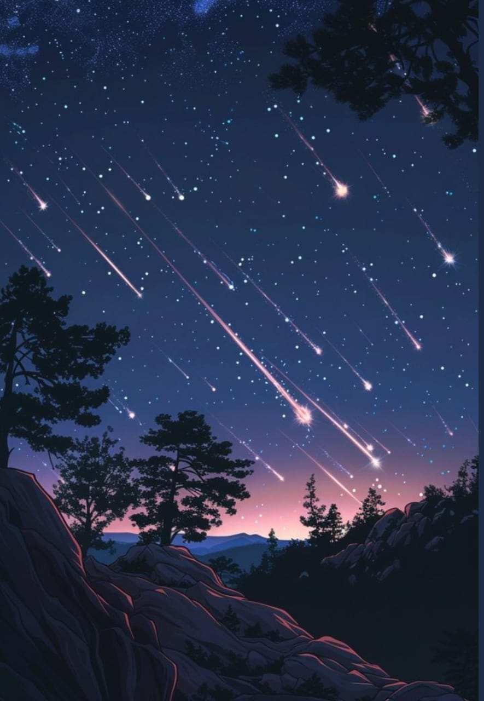

A meteor shower is caused by an interaction between a planet such as Earth and streams of debris from a comet. Comets can produce debris by water vapour drag. Fred Whipple first demonstrated this in 1951. Each time a comet swings by the Sun in its orbit, some of its ice vapourises and a certain amount of meteoroids are shed. These meteoroids spread out along the entire orbit of the comet to form a meteoroid stream. This stream is also known as a ‘dust trail’. This is distinguished from a comet’s dust tail, which is caused by the very small particles that are quickly blown away by solar radiation pressure.
Meteor showers are named after the nearest constellation or bright star.A Greek or Roman letter is assigned to the name of the constellation that is close to the radiant position at the peak of the shower,Then, the astronomical declension of the radiant position shifts slowly and is replaced by ‘dr’ or ‘dz’. For example, meteors radiating from near the star delta Aquarii, whose declination is ‘–16°’, are called delta Aquarids.
Meteor shower radiants are all travelling in parallel paths in the same direction. They all appear to an observer to radiate from a single point in the sky. This ‘radiation point’ is called the radiant. This apparent ‘fixed point’ slowly moves across the sky during the night. This is due to Earth rotating on its axis. It is also the same reason that the stars appear to slowly move across the sky. The radiant also appears to move against the background stars due to Earth revolving around the Sun. This is termed as the radiant drift.